Civil workElectrical work
We dig the foundations, raise the poles, lay the cable and light up roads, campuses and railway premises across Odisha and West Bengal, all with our own crew.
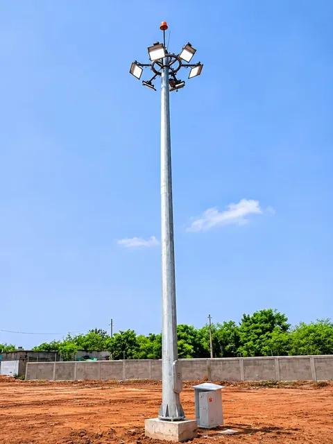
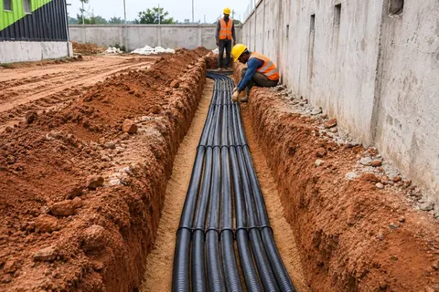
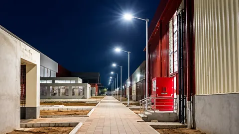
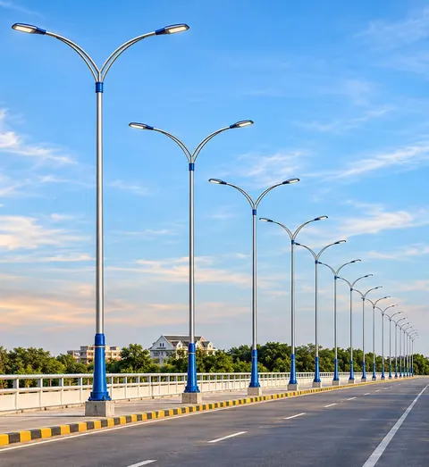
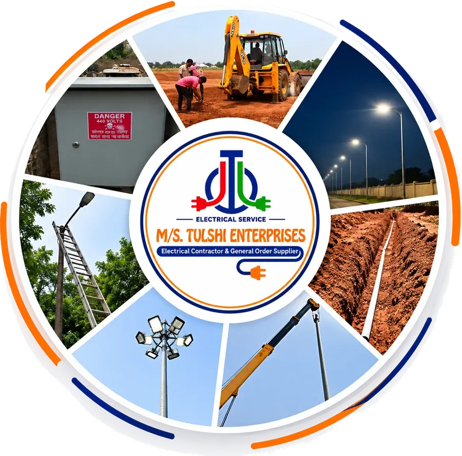
M/S. Tulshi Enterprises is a Cuttack-based civil and MV electrical contractor, registered with the Government of Odisha, CPWD, Indian Railways, HAL and MCL. We build street lighting, high masts, MV and LT lines, underground cabling and civil foundations for government, railway and industrial sites across Odisha and West Bengal.
Most delays on lighting jobs happen where the civil contractor hands over to the electrical one. We do both. The same crew excavates, casts the foundations, erects the poles, lays the cable and commissions the lights, so one team answers for the whole job.
LED street lights on single-arm, double-arm, octagonal and decorative poles, from foundation to night-time check.
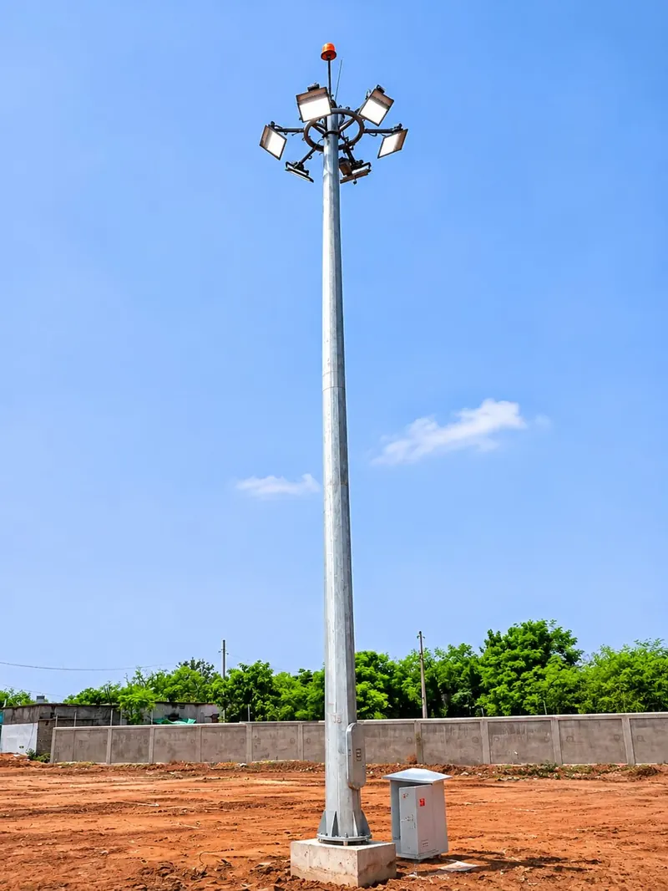
12 m to 30 m galvanised high masts with lantern carriage, LED floodlights and winch.
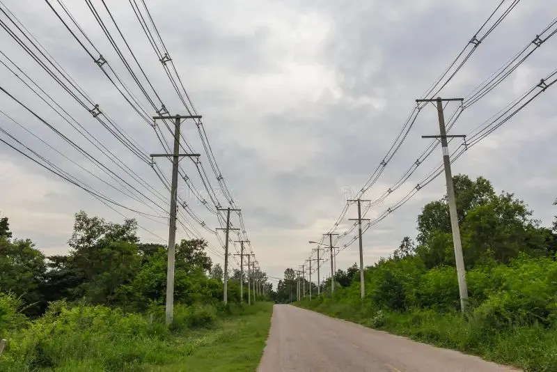
11 kV and 33 kV MV overhead lines and LT lines, with AB cabling and stays to DISCOM norms.
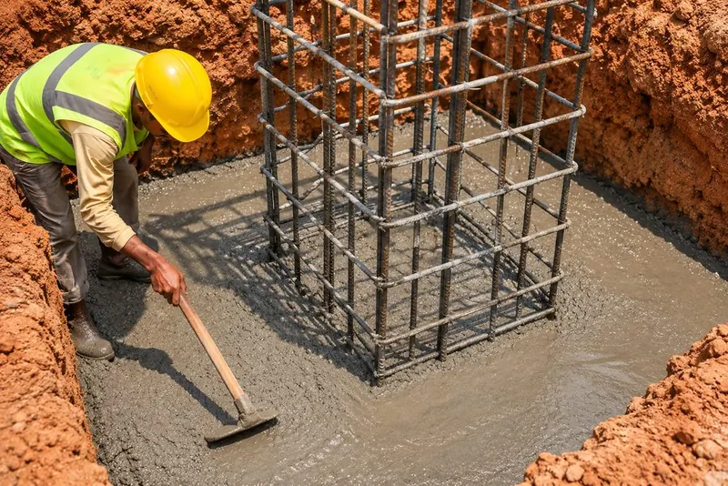
Pits, rebar cages, anchor bolts and concreting for masts, poles and plinths.
Trenching, HDPE ducting and armoured cable laying with terminations.
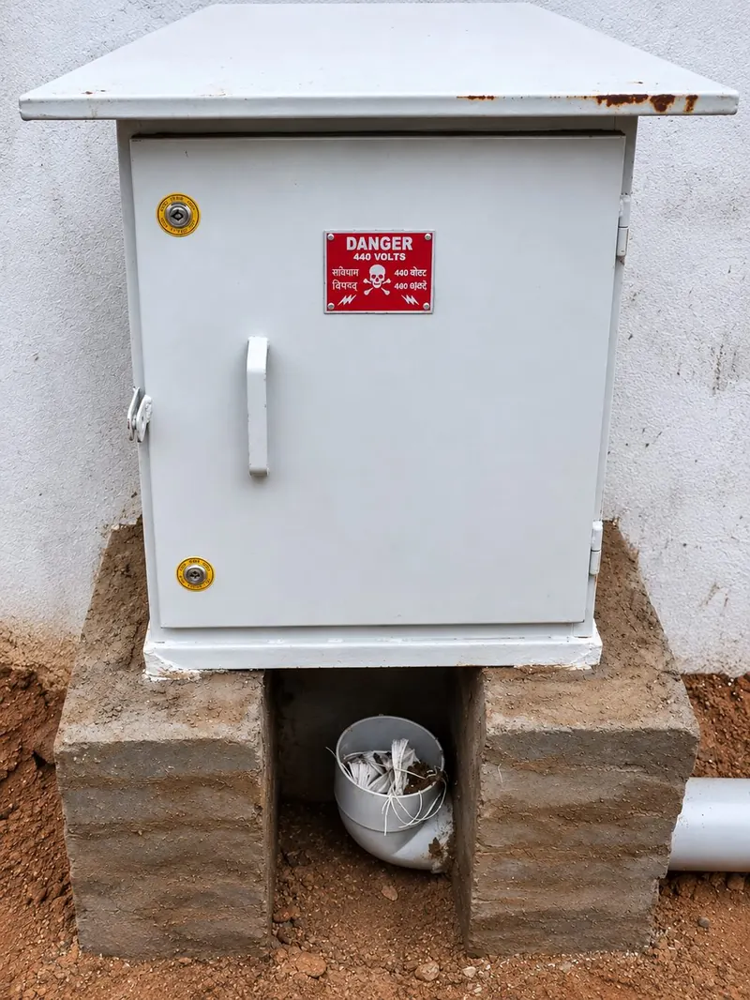
Outdoor feeder pillars and pole-mounted control boxes, wired and tested.
Departments and industries come back to us for the same few reasons.
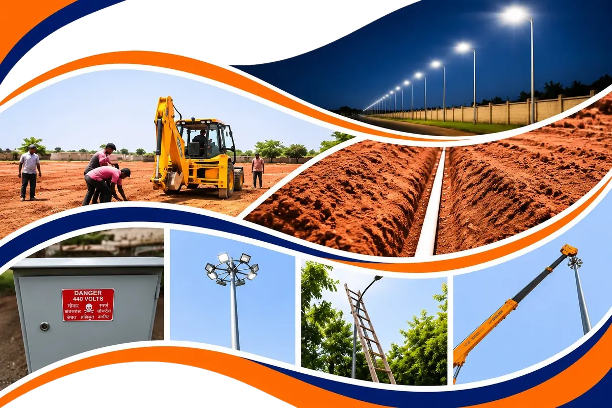
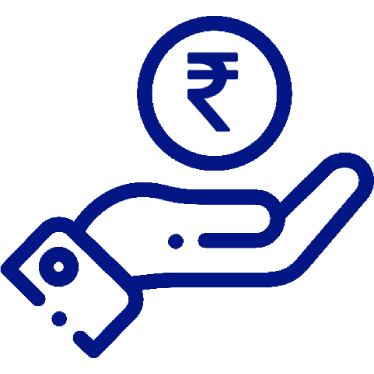
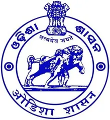
Government of OdishaCivil & MV electrical works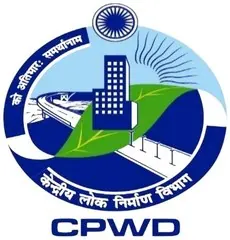
CPWDCentral Public Works Department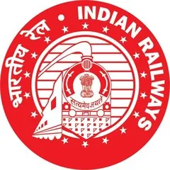
Indian RailwaysRailway works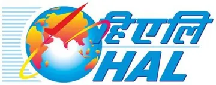
HALHindustan Aeronautics Limited